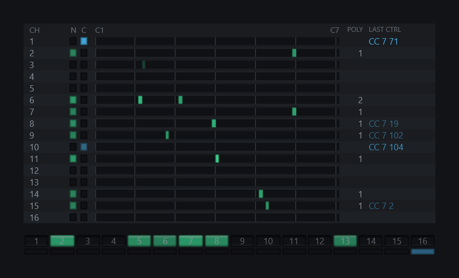

MidiActivityMonitor
MIDI activity lights per channel or per track: notes, controllers, held notes and the last message.
<daw:MidiActivityMonitor>#Overview
MidiActivityMonitor shows what goes over a MIDI port. Each lane (a channel or a track) has a note LED that flashes with the velocity and stays dimly lit while notes are held, a controller LED, an optional strip with the held notes, and the last control message ("CC 7 100", "PB +2048").
Every input method is thread-safe, so call it straight from your MIDI input callback or your sequencer thread.

Use it for
- a MIDI monitor window, track activity in an arranger, a row of channel LEDs in a toolbar
#Quick start
<daw:MidiActivityMonitor x:Name="activity" Source="Channels" RowHeight="12" LowestNote="24" HighestNote="96"/>// From any thread:
activity.NoteOn(channel, note, velocity);
activity.NoteOff(channel, note);
activity.ControlChange(channel, controller, value);
activity.PitchBend(channel, value); // -8192..8191#Examples
#Tracks instead of channels
<daw:MidiActivityMonitor x:Name="tracks" Source="Tracks" LaneCount="4" RowHeight="15"/>tracks.LaneLabels = new[] { "Kick", "Snare", "Hats", "Synth" };
tracks.LaneBrushes = new Brush[] { Brushes.Tomato, Brushes.Gold, Brushes.MediumAquamarine, Brushes.CornflowerBlue };
tracks.LaneClicked += (s, e) => SelectTrack(e.Lane);#A row of LEDs for a toolbar
<daw:MidiActivityMonitor Layout="Compact" Width="240" Height="20"/>#Raw messages
If your MIDI library gives you raw bytes or packed WinMM messages, pass them straight in:
activity.ProcessMessage(status, data1, data2); // lane = MIDI channel
activity.ProcessShortMessage(packedMessage); // status | data1 << 8 | data2 << 16
activity.AllNotesOff(); // e.g. on Stop#XAML of the screenshot
This is the exact XAML of the screenshot at the top. The gallery app shows it live, so you can edit it and press Ctrl+Enter to see your change.
<StackPanel Width="420">
<daw:MidiActivityMonitor x:Name="activity" Source="Channels" RowHeight="12" LowestNote="24" HighestNote="96"/>
<daw:MidiActivityMonitor x:Name="compact" Layout="Compact" Height="20" Margin="0,12,0,0"/>
</StackPanel>#Mouse and keyboard
| Input | What it does |
|---|---|
| Click a lane | Raises LaneClicked, for example to select or mute that track |
#Tips
NoteOffis never dropped, so notes can't get stuck on screen even under heavy load.- Call
Reset()(on the UI thread) when the MIDI port changes.
#API reference
#Properties
| Property | Type | Default | Description |
|---|---|---|---|
Source | MidiActivitySource | Channels | Whether lanes are MIDI channels or tracks. |
Layout | MidiActivityLayout | Rows | List of lanes, or a compact grid of LEDs. |
LaneCount | int | 16 | Number of lanes (16 for channels; number of tracks otherwise). |
LaneLabels | IList<string> | null | Lane names (track names). Null = "1".."16" for channels, "T1".. for tracks. |
LaneBrushes | IList<Brush> | null | Optional per-lane colours (track colours). Used for the colour chip, note LED and note map. |
RowHeight | double | 14 | Height of one lane in pixels (list layout). |
ShowHeader | bool | true | Whether the column header row is shown. |
ShowNoteMap | bool | true | Whether each lane shows a strip with its held notes. |
ShowControlText | bool | true | Show the last control message ("CC 7 100", "PB +2048", "PC 12"). |
LowestNote | int | 0 | Range shown in the note map (default the full 0..127, so nothing is ever hidden). |
HighestNote | int | 127 | Highest note shown in the note map. |
NoteDecay | double | 0.3 | Seconds for a note flash / released note to fade out. |
Colour properties (5)
Each one is set by the skin. Set it on one control to override the skin for that control only.
| Property | Description |
|---|---|
NoteBrush | Brush for the notes. |
ControlBrush | Brush for the controller LED and text. |
LedOffBrush | Brush for the LEDs while off. |
AlternateRowBrush | Brush for the every other lane. |
TickBrush | Octave marks in the note map. |
#Events
| Event | Handler | Description |
|---|---|---|
LaneClicked | MidiLaneEventHandler | A lane was clicked (select the track / channel in your app). |
#Methods
| Method | Description |
|---|---|
NoteOn(int lane, int note, int velocity) | Note on (velocity 0 is treated as note off, as in MIDI). Any thread. |
NoteOff(int lane, int note) | Note off. Any thread. Never dropped, so notes can't get stuck on screen. |
ControlChange(int lane, int controller, int value) | Control change. CC 120 / 123 also clear held notes. Any thread. |
PitchBend(int lane, int value) | Pitch bend, -8192..8191. Any thread. |
ProgramChange(int lane, int program) | Program change. Any thread. |
ChannelPressure(int lane, int pressure) | Channel pressure (aftertouch). Any thread. |
PolyPressure(int lane, int note, int pressure) | Polyphonic aftertouch for one key. Any thread. |
AllNotesOff(int lane = -1) | Clears held notes on one lane, or all lanes when lane is -1. Any thread. |
ProcessMessage(int status, int data1, int data2, int lane = -1) | Parses a raw channel message. Lane = MIDI channel (0-based) unless lane is given (e.g. the track index for Tracks). System messages are ignored. Any thread. |
ProcessShortMessage(int message, int lane = -1) | WinMM / NAudio packed short message: status | data1 << 8 | data2 << 16. Any thread. |
Reset() | Clears all activity immediately (UI thread). Use when the MIDI port changes. |
GetHeldCount(int lane) | Number of notes currently held on a lane (UI thread). |